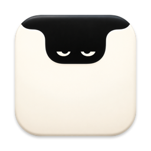
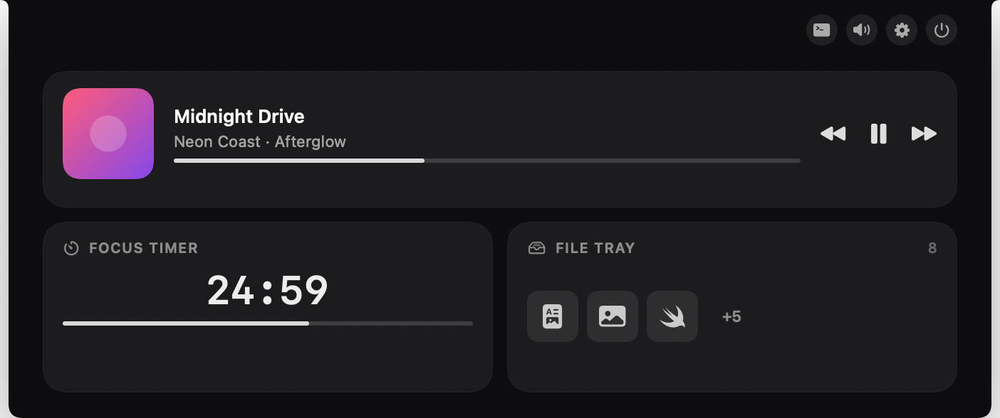
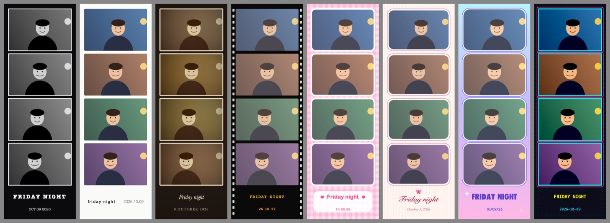
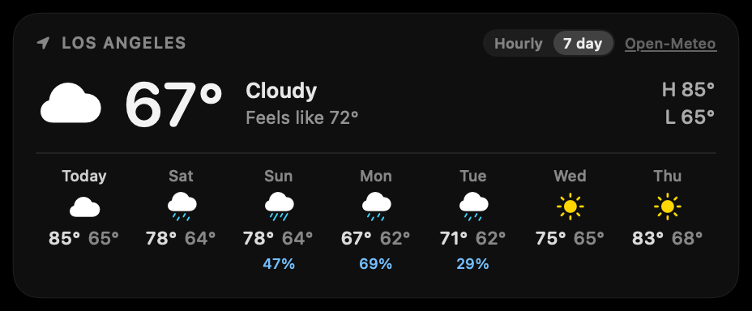
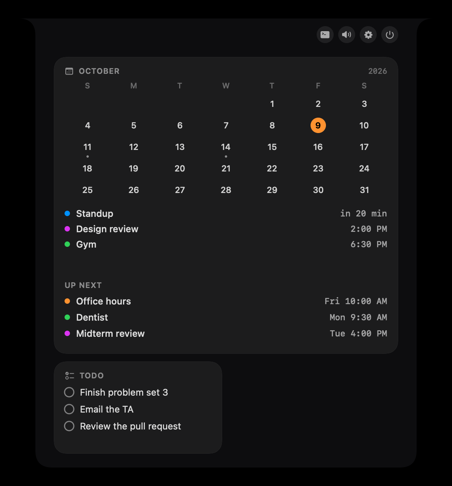

Hangover by Emmanuel HernandezHangover puts your music, your day and your files in the MacBook notch.
Point at the notch and it opens. Move away and it closes. It's free, the code is open, and it keeps itself up to date.
Version 1.0.13, October 15, 2026. If you already have Hangover, it updates itself.
Try it
This is a small copy of Hangover, drawn right here with sample music, to-dos and events. Point at the notch and it opens. On a phone, tap it. Nothing plays until you press play.
It's a recreation with made up songs, not the app. The real Hangover works with your own music, calendar and to-dos.
What's in it
- Music
- Play, pause, skip and scrub, and pick the speaker, without leaving what you're doing.
- Calendar
- What's next today, in five looks. A heads-up in the notch before an event starts, and a Join button when it's a meeting.
- To-dos
- From Reminders, Notion or TickTick. Check one off right there, or give it a due date and the notch reminds you that morning, and once more when it's overdue.
- Notes
- Write as much as you want and it saves as you type. Control+Option+J opens a new note from any app. Notes go to a folder (an Obsidian vault works), to Apple Notes, or both.
- File tray
- Drop a file on the notch and drag it back out when you need it. Press Convert to change a picture's format or size, shrink a video, turn it into a GIF or keep only its sound, turn PDF pages into pictures, or join pictures and PDFs into one PDF. It can AirDrop or zip what's in it, and it keeps a clipboard history.
- Record
- Record the whole screen, one window or an area, with your face cam, your voice and the Mac's sound. Standard keeps files small and High records at full resolution and 60 fps. Control+Option+R starts and stops it from any app, and the recording lands in Movies/Hangover and in the tray.
- Timer
- A focus timer with pomodoro rounds. The closed notch shows the time left.
- Weather
- Now, the next hours and the week.
- Mirror
- A camera check before a call, with frames, stickers and a ring light. It's also a photo booth: four shots, and the strip is saved as a PDF.
- Design kit
- Palettes, a screen eyedropper, links and reference pictures for design work. Reference pictures resize to any size and remember it. Off until you turn it on.
- Layouts
- Start from a template, then press, hold and drag to move widgets and change their size.
- Closed notch
- Each side can show the date, your battery, the next event, the weather, a timer or your open to-dos.
- Glow
- A soft light around the notch when music plays or something needs you. You pick the colors, and it can pulse with the beat or throw lasers.
- Accent color
- Pick the color of every highlight, or let it follow the one your Mac is set to.
- Opened look
- How wide the notch opens, and whether its corners are soft or square.
- Swipe
- Swipe up with two fingers to close it. It stays off until you turn it on.
- Welcome tour
- The first time you open it, a tour on the real notch sets everything up with you. It comes in three lengths, for however much time you have.
- Coding agents
- When Claude Code, Codex, Cursor or another agent needs a yes or a no, the request shows up in the notch. Answer it there, or press Control+Option+Y or Control+Option+N from any app. It can send the question to your iPhone or Apple Watch too. This part comes from Open Island, and you can switch it off.
- Languages
- English, Simplified Chinese and Traditional Chinese. A native speaker hasn't checked the Chinese yet.




Opening it
Hangover is signed with an Apple Developer ID and notarized by Apple. Open Hangover.zip from your Downloads, drag Hangover into your Applications folder and double-click it. macOS asks once if you want to open an app from the internet. Click Open.
Hangover keeps itself up to date. It checks the first time you open it and once a day after that, and a new version goes in the next time the app starts. You can turn that off in Settings, About.
Each permission is asked for once, the first time you use the thing that needs it: Screen Recording for the recorder, the camera for the mirror and the face cam, the microphone for your voice, and control of Notes if you save notes to Apple Notes.